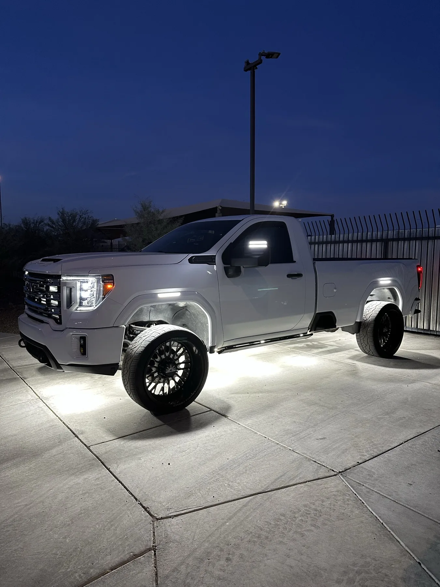
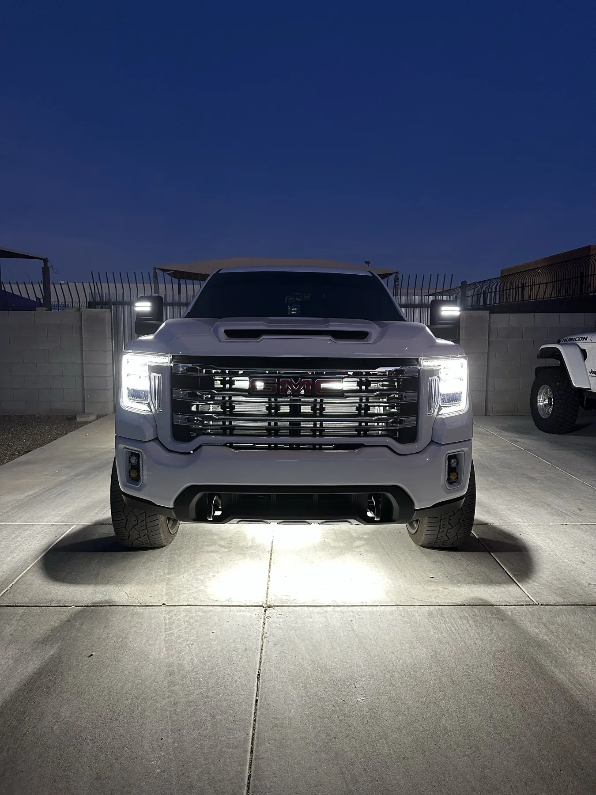

Mesa, AZ · East Valley
Rock Light And Wheel Light Installation In Mesa, AZ
ITM Customs is a Mesa shop that makes its own rock lights and wheel lights and installs them, mostly on trucks and side-by-sides from around the East Valley. Drop it off in the morning and pick it up lit the same day, with a lifetime warranty on the install.
- Drop-Off
- Mornings, Mon to Sat
- Install Time
- Same day
- Warranty
- Lifetime on installs
- Reviews
- 4.7★ from 35
Built For The Dark Roads East Of Mesa
Mesa runs out of streetlights fast once you head east. Bush Highway out to Saguaro Lake, Usery Pass Road and the trailheads along the Salt River are dark, and that's where a lit truck earns its keep. Rock lights show you the ground you're parking on, and wheel-well lights show you what's around the tires.
If you ride the Bulldog Canyon OHV area off Usery Pass Road, you know how dark the staging area gets after sunset. Rock lights under a RZR or a Can-Am light the trailer ramp and the ground around the tires, and pure white is legal to run on the road home.
In town it's a different job. A dark driveway, a gravel lot after a game, a trailer to hook up at night. Pure white rock lights double as work lights for all of it.
Serving Mesa And The East Valley
Most of our install customers come from Mesa, Queen Creek and San Tan Valley, and Gilbert, Chandler and Tempe are a short drive up the Loop 202 or the US-60. From Queen Creek and San Tan Valley, State Route 24 meets the Loop 202 on the way in.
Because drop-off is in the morning and pickup is the same day, you can drop the truck on the way to work and drive it home lit. Our East Valley page has the miles and the route in from every city around us.
What We Install At Our Mesa Shop
Each service has its own page with the lights, the prices and the photos.
Dropping Your Truck Off In Mesa
Drop-off is between 9 and 10:30 in the morning, Monday to Saturday, and most installs take 4 to 8 hours, so you pick the truck up the same day. Book a day online and we text you to confirm it and your final price. The shop address comes with that confirmation.
Bring your lights if you have them. Pick Bringing My Own when you book and tell us what you have, or buy a kit from us and we'll install it in the same visit.
What Lights And Installs Cost
Lights are priced on our site. Install labor depends on your vehicle and how many lights you want, so we quote it when we confirm your booking, before any work starts.
| What | Price | Details |
|---|---|---|
| Pure White Rock Lights | $45 to $55 | Pack of 4, 72 or 84-chip |
| 144-Chip Rock Light Kit | $210 to $840 | 4 to 24 lights |
| 219-Chip Rock Light Kit | $240 to $920 | 4 to 24 lights |
| Switchback Kit | $200 to $700 | 4 to 20 lights, white and amber |
| RGBW Color Kit | $205 to $705 | 4 to 20 lights |
| Wheel Lights | $380 or $499 | 5-row or 10-row, all four wheels |
| Install Labor | Quoted first | Agreed before we start |
Driving Lit In Mesa And Arizona
Arizona's rules apply in Mesa the same as everywhere in the state. White is fine on the road. Red or blue light visible from the front isn't allowed on a highway, and flashing modes are for when you're parked. The plain-English summary of A.R.S. 28-947 is on our rock lights page.
Lit By ITM
Trucks running our lights. Tap one for the full build.


Mesa Questions
Where is the shop?
In Mesa. Drop-off is by appointment, and the address comes with your booking confirmation.
What are your hours?
Drop-off is between 9 and 10:30 AM, Monday to Saturday, by appointment, with same-day pickup.
Do you serve Queen Creek, Gilbert and San Tan Valley?
Yes. A lot of our install customers come from Queen Creek and San Tan Valley, and Gilbert, Chandler and Tempe are a short drive to the shop.
Do you work on side-by-sides?
Yes. Trucks and side-by-sides are most of what we light, plus Jeeps, SUVs and cars. If it's an RV, message us before you book.
Do you install lights I bought somewhere else?
Yes. Pick Bringing My Own in the booking form and tell us what you have.
How much does an install cost?
Lights start at $45 for a pack of four. Install pricing depends on the job, and you get your final price by text before any work starts. Every install holds its day with a $50 deposit that comes off your total.